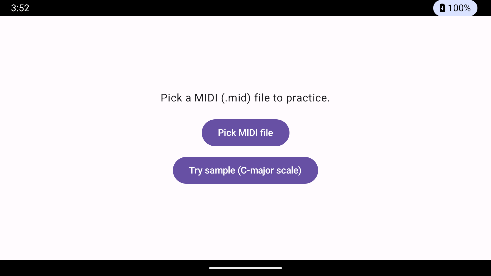
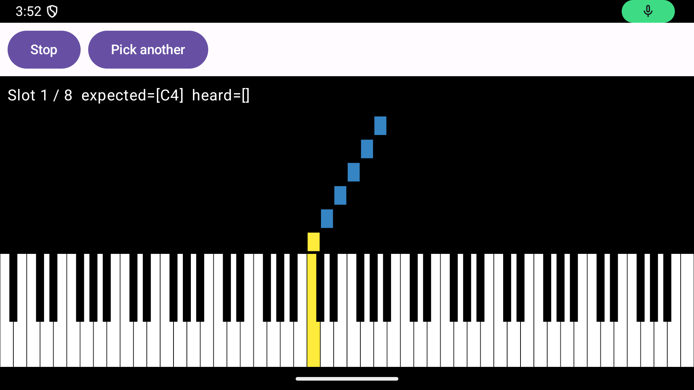
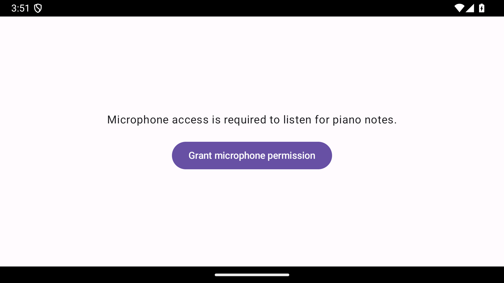

A Synthesia-style step-by-step piano practice tool. Loads a MIDI file, listens through your microphone, and only advances when you've actually played the right note on a real piano.

.mid file or use the bundled sample.

Prebuilt artifacts are on the Releases page. To build from source:
cd android
docker compose run --rm build
adb install -r app/build/outputs/apk/debug/app-debug.apkMin SDK 26, target SDK 34. Docker image includes Android cmdline-tools, platform-34, build-tools 34.0.0, and Gradle 8.7.
cd desktop
docker compose run --rm build # compile + unit tests (Linux container)
gradlew.bat --no-daemon createDistributable # native .exe with bundled JRE (host JDK 17)jpackage is OS-bound — Windows installer must be built on Windows. The Docker step verifies code health; the host step produces a runnable folder.
The desktop project includes an offline TestPlayer that synthesizes audio for every slot of a MIDI file and runs it through the exact PitchDetector + PitchMatcher chain the live app uses.
cd desktop
gradlew.bat -PmidiPath="C:\path\to\file.mid" testPlayer
gradlew.bat -PmidiPath="C:\path\to\corpus" -PsampleSize=500 testPlayer